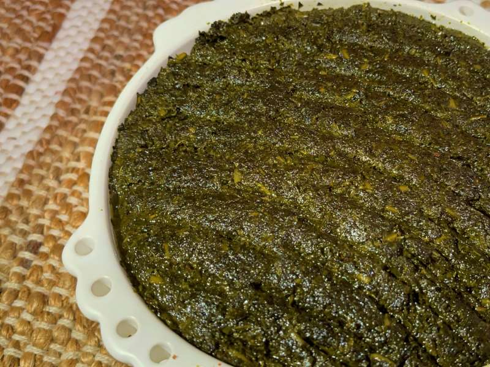
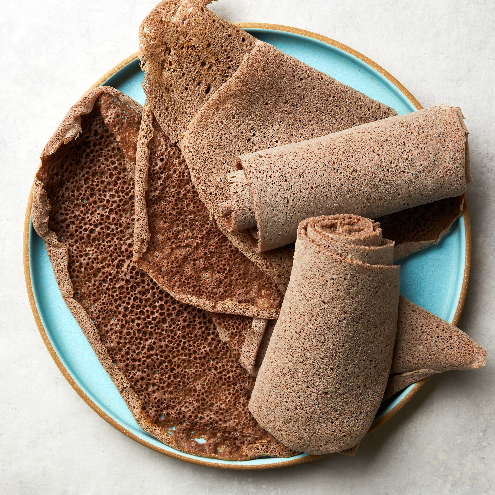

The Traditional Ethiopian recipes
የኢትዮጵያ ባህላዊ ምግቦች አሰራር
Doro wet(ዶሮ ወጥ)
Prep : 30min | Cook : 1.30hr
shiro wet(ሽሮ ወጥ)
Prep : 10min | Cook : 30min

gomen kitfo(ጎመን ክትፎ)
Prep : 30min | Cook : 1.30hr

Ingera(እንጀራ)
Prep : 93hr 30min | Cook : 2hr